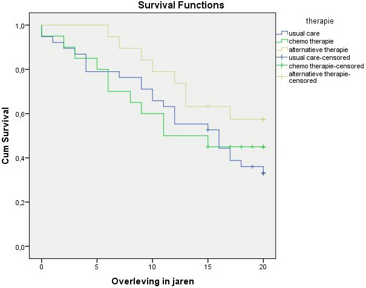
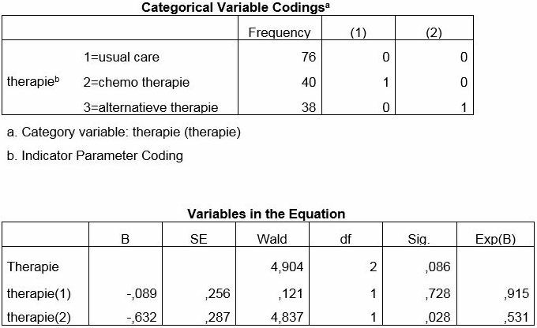
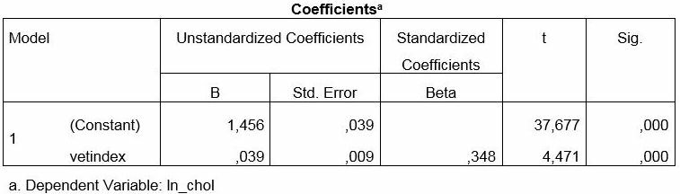
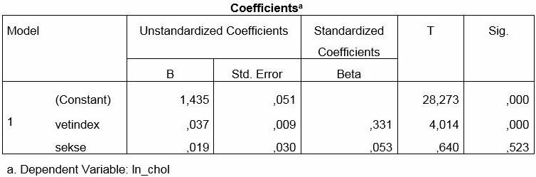

Al je antwoorden worden gewist en je begint opnieuw. Weet je het zeker?
Jouw resultaten
MWO 2 · Oefentoets Klinisch redeneren
—
/ 37
0
Goed
0
Fout
0
Niet beantwoord
Vraag 1
OPDRACHT 4 (13 punten)
Het Nederlands Kanker Instituut (NKI) heeft een onderzoek naar het effect van een nieuwe bestralingsmethode bij longkanker onderzocht. Deze nieuwe bestralingsmethode werd vergeleken met de gebruikelijke bestralingsmethode. Sterfte en de tijd tot sterfte werd als uitkomstvariabele gebruikt.
Welke twee analysemethoden zijn het meest geschikt om het effect van deze behandeling te toetsen? Verklaar je antwoord.
Modelantwoord
Log Rank toets of een Cox regressie analyse, omdat het aspect 'tijd' meegenomen wordt.
Vraag 2
Leg uit waarom sommige patiënten met longkanker zich presenteren met veralgemeende gewrichtsklachten.
Modelantwoord
Door humorale factoren (meestal auto-antistoffen of soms onbegrepen) kunnen er zogenaamde paraneoplastische verschijnselen optreden. Belangrijk is te melden dat het hier niet gaat om een uitzaaiing maar om een niet-metastatische manifestatie.
Vraag 3
Wat zijn de typische kenmerken van deze patiëntenpopulatie (patiënten met een activerende EGFR mutatie)?
Modelantwoord
Deze patiënten zijn vaak (jonger, vrouw,) van Aziatische origine en hebben licht of nooit gerookt.
Vraag 4
OPDRACHT 10 (10 punten)
Lees onderstaande tekst en beantwoord de vragen onder de tekst over kenmerken van kwalitatieve onderzoeksmethoden. Ontleend aan: Buiting, Hilde M., et al. "Understanding provision of chemotherapy to patients with end stage cancer: qualitative interview study." BMJ 342 (2011): d1933.
Behandeling bij terminale longkanker
Stoppen of doorgaan met behandeling bij mensen met geavanceerde longkanker in de laatste levensfase is een dilemma waar longartsen regelmatig mee geconfronteerd worden. Mensen met geavanceerde longkanker kiezen in de laatste levensfase soms voor een potentieel levensverlengende behandeling in de vorm van chemokuur. Deze behandelingen zijn echter zelden significant levensverlengend, maar brengen wel vaak ernstige bijwerkingen met zich mee. Onderzoek onder artsen en verpleegkundigen toont aan dat mensen die in de laatste week geen chemokuur meer krijgen, terwijl ze deze wel wilden, achteraf een betere kwaliteit van leven ervaren dan mensen die in die laatste fase nog wel chemokuur krijgen. Longartsen moeten dan afwegen wat het beste is voor de patiënt in deze situatie: het respecteren van de autonomie van de patiënt en daarom een chemokuur aanbieden of, tegen de wens van de patiënt in, geen chemokuur voorschrijven.
Voor je masterstage wil je meer inzicht krijgen in overwegingen van longartsen rond besluitvorming over wel of niet doorgaan met behandeling bij mensen met geavanceerde longkanker om zo handvatten te krijgen hoe daar in de artsenpraktijk mee om te gaan.
Je denkt dat een kwalitatief onderzoek het meest geschikt is om dit onderwerp te onderzoeken. Je stagebegeleider vindt dat echter niet vanzelfsprekend en vraagt om een motivering. Geef drie argumenten waarom een kwalitatieve benadering beter geschikt is om dit onderwerp te onderzoeken dan een kwantitatieve benadering.
Modelantwoord
I. Kwalitatief onderzoek biedt mogelijkheid om inzicht te krijgen in perspectieven, motivaties en gevoelens. In dit geval gaat het om overwegingen van artsen, die lastig met een vragenlijst in kaart gebracht zouden kunnen worden.
II. Overwegingen laten zich niet goed kwantificeren.
III. Door middel van kwalitatief onderzoek kan een verschijnsel verder verkend of verdiept worden. In dit geval gaat het om de overwegingen van longartsen.
IV. Kwalitatief onderzoek is geschikt om zicht te krijgen op complexe situaties. De overwegingen van longartsen is een complexe situatie, waar allerlei factoren een rol bij kunnen spelen.
V. Er is nog weinig bekend over overwegingen van longartsen, vandaar eerst kwalitatief onderzoek om daarop zicht te krijgen.
Vraag 5
Opdracht 6 (7 punten) Dezelfde 60-jarige vrouw als in opdracht 5 (pijn rechter schouder/arm, krachtsverlies rechter hand, heesheid, hoesten; X-thorax met densiteit in de top van de rechter long, uitbreidend naar het mediastinum en hoogstand rechter hemidiafragma). U denkt aan een longcarcinoom. Bij deze patiënte moet vervolgens in kaart gebracht worden wat het stadium en de pathologische diagnose van haar ziekte is.
Vraag 6a. Welke twee onderzoeken zijn er nodig om tot een stadiëring te komen? Verklaar je antwoord.
Modelantwoord
Stadiëren betekent de uitgebreidheid van de ziekte in kaart brengen; hiervoor worden m.n. CT-scans en FDG-PET-scans gebruikt. Bij patiënten met een stadium 3 is het ook wenselijk een MRI-scan van de hersenen te maken i.v.m. mogelijke hersenmetastasen (dit laatste staat niet in het handboek).
2 punten. CT-scan + FDG-PET-scan.
Vraag 6
Opdracht 3 — Sterfte bij kankerpatiënten (totaal 12 punten)
In het VUMC werd een onderzoek uitgevoerd naar de effectiviteit van een nieuwe behandeling bij kankerpatiënten. Hiervoor werd een RCT uitgevoerd waarbij de nieuwe behandeling werd vergeleken met reguliere zorg. De patiënten werden tot maximaal 5 jaar na start van de nieuwe behandeling gevolgd en om de effectiviteit van de nieuwe behandeling te onderzoeken werd een Cox regressie analyse uitgevoerd met sterfte en tijd tot sterfte als uitkomst. Output 9 toont het resultaat van deze analyse.
Output 9 — Variables in the Equation (Cox regressie)
B
SE
Wald
df
Sig.
Exp(B)
nieuw_beh
-,744
,245
9,195
1
,002
,475
Wat is de interpretatie van Exp(B) voor de nieuwe behandeling? (3 punten)
Modelantwoord
De HR voor de nieuwe behandeling t.o.v. reguliere zorg om dood te gaan / de kans om dood te gaan voor iemand die de nieuwe behandeling krijgt t.o.v. iemand die reguliere zorg krijgt, gemiddeld over de tijd.
Vraag 7
Stel dat deze patiënt adjuvante therapie nodig heeft, wordt dit dan voor of na de primaire behandeling gegeven? (1 punt)
Modelantwoord
Erna.
Vraag 8
Opdracht 3 — Casus tweedejaars geneeskundestudenten (totaal 8 punten)
In een onderzoekje uitgevoerd door tweedejaars studenten geneeskunde werd de systolische bloeddruk vergeleken tussen kinderen. Output 6 toont descriptieve informatie betreffende de resultaten van dit onderzoek.
Output 6 — Systolische bloeddruk
Systolische bloeddruk
Mean
sd
aantal
Jongens
115
5
50
Meisjes
110
5
50
Als meisjes met 1 gecodeerd zijn en jongens met 0, wat wordt dan de waarde van de b0 in een regressieanalyse met het geslacht als enige onafhankelijke variabele? (2 punten)
Modelantwoord
b0 is het gemiddelde van de jongens = 115.
Vraag 9
Opdracht 7 — Longziekten (totaal 10 punten)
Een groot deel van de longkankerpatiënten wordt behandeld met cytotoxische chemotherapie.
Geef 4 van de meest voorkomende bijwerkingen van cytotoxische chemotherapie. (4 punten, 1 punt per antwoord)
Een patiënt komt met een afwijkende X-thorax. Je denkt aan een stadium 3 longkanker (NSCLC) op basis van deze X-thorax.
Welke drie andere onderzoeken moeten nog plaatsvinden om tot een adequate stadiëring te komen? (1 punt per antwoord, maximum 3)
Modelantwoord
CT-thorax, FDG-PET scan, MRI hersenen.
Vraag 11
Welke behandelmodaliteiten worden bij voorkeur toegepast bij een patiënt met een stadium 3 NSCLC? Noem er 3. (1 punt per antwoord, maximum 3)
Modelantwoord
Chemotherapie en radiotherapie, eventueel adjuvante immunotherapie of resectie.
Vraag 12
Vervolg Opdracht 5. Kwalitatief onderzoek.
Het volgende fragment is ontleend aan het deel Methode van het artikel van Payne et al. In dit onderzoek analyseerden de onderzoekers de data middels een kwalitatieve analyse.
Dataverzameling De onderzoekers namen semi-gestructureerde interviews af. De interviews vonden face to face plaats, met uitzondering van één patiënt die voorkeur had voor een telefonisch interview. De interviews zijn afgenomen door de eerste auteur, die getraind was in het afnemen van kwalitatieve interviews. Na afloop van de interviews is er een samenvatting ter controle van de interpretatie toegestuurd aan de deelnemers. Dataverzameling ging door tot saturatie was bereikt.
Data analyse Alle interviews zijn opgenomen en letterlijk getranscribeerd. Vervolgens zijn deze data volgens een kwalitatieve inhoudsanalyse geanalyseerd. (…) De eerste auteur codeerde de data, waarna een multidisciplinair onderzoeksteam onafhankelijk daarvan deze analyse verifieerde. Gezamenlijk werden thema’s en sub-thema’s onderscheiden.
Beschrijf drie stappen die de onderzoekers hierbij (bij de data-analyse) hebben doorlopen. (3 punten)
Modelantwoord
1. Opdelen: Open coderen — tekstfragmenten voorzien van een label. 2. Indelen: Axiaal coderen — codes groeperen/rangschikken in thema’s of categorieën. 3. Interpreteren: Selectief coderen — codes/thema’s in verhouding tot elkaar bekijken.
Vraag 13
Vervolg Opdracht 8. Longziekten.
De diagnose wordt bevestigd; welke behandeling zou deze patiënt moeten krijgen? (2 punten)
Modelantwoord
Concurrente chemoradiotherapie, gevolgd door immunotherapie (durvalumab).
Vraag 14
Vervolg Opdracht 9. Longziekten.
Welke patiënten komen in aanmerking voor een behandeling met immunotherapie of de combinatie chemotherapie en immunotherapie in de eerste lijn? Geef drie patiëntkenmerken. (3 punten)
Modelantwoord
Patiënten zonder een oncogenic driver, met een goede performance, geen auto-immuunziektes in de voorgeschiedenis en geen actieve infecties.
Behandeling bij terminale longkanker. Stoppen of doorgaan met behandeling bij mensen met geavanceerde longkanker in de laatste levensfase is een dilemma, waarmee longartsen regelmatig geconfronteerd worden. Mensen met geavanceerde longkanker kiezen in de laatste levensfase soms voor een potentieel levensverlengende behandeling in de vorm van chemokuur. Deze behandelingen leiden niet significant tot levensverlenging, maar wel tot ernstige bijwerkingen. Onderzoek onder artsen en verpleegkundigen laat zien dat longkankerpatiënten, die in de laatste week geen chemokuur meer kregen terwijl ze dat wel wilden, achteraf een betere kwaliteit van leven ervaarden dan longkankerpatiënten die in die laatste fase nog wel chemokuur kregen. Longartsen staan voor de afweging: het respecteren van de autonomie van de patiënt en daarom een chemokuur aanbieden, of — tegen de wens van de patiënt in — geen chemokuur voorschrijven. Voor je masterstage wil je meer inzicht krijgen in overwegingen van longartsen rond deze besluitvorming; je denkt dat een kwalitatief onderzoek aangewezen is. Je stagebegeleider vraagt om een motivering. (Ontleend aan: Buiting HM et al. BMJ 342 (2011): d1933.)
Geef twee argumenten die aangeven dat een kwalitatieve benadering beter geschikt is om dit onderwerp te onderzoeken dan een kwantitatieve benadering.
Modelantwoord
Kwalitatief onderzoek biedt de mogelijkheid om inzicht te krijgen in perspectieven, motivaties en gevoelens. Twee van de volgende argumenten:
1. Overwegingen laten zich niet goed kwantificeren.
2. Door kwalitatief onderzoek kan een verschijnsel verder verkend of verdiept worden.
3. Kwalitatief onderzoek is geschikt om zicht te krijgen op complexe situaties.
4. Er is nog weinig bekend over overwegingen van longartsen, vandaar eerst kwalitatief onderzoek om daarop zicht te krijgen.
Vraag 16
Opdracht 7 — Longziekten (totaal 8 punten)
Een groot deel van de longkankerpatiënten wordt behandeld met targeted therapy.
Benoem de 4 oncogenic drivers die bij moleculair onderzoek bepaald moeten worden in de eerste lijn.
Modelantwoord
EGFR, ALK, ROS1, BRAF
Vraag 17
Vervolg Opdracht 7 — Longziekten.
Welke twee voornaamste bijwerkingen komen het meeste voor bij deze behandeling?
Modelantwoord
Rash, diarree.
Vraag 18
Vervolg Opdracht 8 — Longziekten. Er wordt inderdaad een stadium 1 NSCLC vastgesteld.
Welke behandelopties heeft deze patiënt en welke heeft de voorkeur?
Modelantwoord
Lobectomie of stereotactische radiotherapie (=SABR) (2 pt). De voorkeur gaat uit naar SABR: in verband met het recente hartinfarct is er een verhoogd cardiaal peri-operatief risico (1 pt).
Vraag 19
Vervolg Opdracht 2 (heer M.). Hij heeft een voor longkanker verdachte afwijking op de rechter long. De huisarts verwijst hem met spoed naar de longarts, die een FDG PET scan laat maken.
Welke uitspraak klopt NIET?
Vraag 20
Vervolg Opdracht Kwalitatief onderzoek (Hopmans et al., 2015).
Welke uitspraak verwijst NIET naar de relevantie van kwalitatief onderzoek voor de geneeskunde?
Wendy Hopmans et al. (2015) onderzochten de rol van Shared Decision Making (SDM) bij patiënten met Fase 1 Non-Small Cell Lung Cancer (NSCLC) in een mixed methods study. In het onderzoek werden kwalitatieve interviews (N = 11) afgenomen en daarnaast vond een survey-studie (N = 76) ofwel een enquête plaats met vragen over verschillende SDM-gerelateerde aspecten. Patiënten werden geïnterviewd om hun ervaring met behandelbeslissingen beter te begrijpen. In het survey-onderzoek beoordeelden patiënten het belang van 20 aspecten over SDM bij NSCLC.
Vraag 1a. Het bovengenoemde onderzoek combineert kwalitatief én kwantitatief onderzoek in één studie, die qua aannamen en opzet van elkaar verschillen. Geef achter elke uitspraak aan of het kenmerk hoort bij aannamen in kwalitatief onderzoek of in kwantitatief onderzoek.
Het onderzoek richt zich op bevestigen of verwerpen van een hypothese.
Het onderzoek kan significante verschillen aantonen tussen kenmerken van respondenten.
Er worden respondenten geselecteerd die gedetailleerde informatie kunnen geven over het onderwerp van onderzoek.
Het onderzoek maakt gebruik van verschillende methoden van dataverzameling.
Dataverzameling en data-analyse wisselen zich af tijdens het onderzoek.
Data-analyse vindt plaats via een beredeneerd proces.
Een fitte 59-jarige patiënt presenteert met bloed ophoesten op de SEH. Er wordt een X-thorax gemaakt en hierop wordt een massa gezien tpv linker hilus. Bij de stadiëring van longkanker worden verschillende onderzoeksmethoden gebruikt.
Vraag 1a. Welk van de onderstaande technieken is het MINST doelmatig in dit opzicht?
Vraag 23
Vervolg maligne longziekten opdracht 2. Het moleculaire onderzoek levert een EGFR mutatie in exon 19.
Vraag 2b. Wat is de beste anti-kanker behandeling voor haar?
Vraag 24
Vervolg maligne longziekten opdracht 3. De longarts deelt de overwegingen van het MDO met de patiënt en ze benoemt wat het behandelvoorstel van het MDO is. Patiënt heeft niet veel zin in gedoe en wil graag weten of dit stadium nog te genezen is door deze behandeling.
Vraag 3c. Wat is het meest juiste antwoord op deze vraag?
Vraag 25
Casus Darmkanker (vervolg)
Om effecten te kunnen schatten werd vervolgens een Cox-regressie analyse uitgevoerd. Output 2.2 toont het resultaat van deze analyse.
Output 2.1

Output 2.2

Wat is de interpretatie van de Exp(B) voor therapie(2) in Output 2.2 (c.q. het getal 0,531)?
Modelantwoord
Dat is de hazard ratio op sterfte voor de alternatieve therapie ten opzichte van usual care.
Vraag 26
Casus Cholesterol (vervolg)
In een tweede analyse werd onderzocht in hoeverre sekse een confounder was in bovengenoemde relatie. Hiervoor werd de variabele 'sekse' (0 = mannen, 1 = vrouwen) toegevoegd aan het model. Output 4.2 toont het resultaat.
Output 4.1

Output 4.2

Is sekse een confounder in de relatie tussen lichaamsvet en cholesterol? Beargumenteer het antwoord.
Modelantwoord
Nee. De regressiecoëfficiënt voor vetindex verandert nauwelijks (van 0,039 naar 0,037; minder dan 10%) na toevoeging van sekse.
Vraag 27
Casus Pijn in de rug — Maligne longziekten (3 vragen, 8 punten)
Een 51-jarige vrouw raadpleegt haar huisarts in verband met pijn in de rug, die haar doorverwijst voor een X-thorax. Er wordt een afwijking op de long rechts gezien en de huisarts verwijst haar naar de longarts. Deze denkt aan een longkanker en wil een diagnose en een stadium.
Er wordt een stadium 4 NSCLC vastgesteld. De diagnose is adenocarcinoom, de moleculaire analyse toont een EGFR-mutatie. Wat is de beste therapie voor haar?
Vraag 28
Casus Longkanker — Maligne longziekten (3 vragen, 8 punten)
Vrouwen krijgen anno 2021 net zo vaak longkanker als mannen.
Vraag 29
Casus Hoestklachten — Maligne longziekten (3 vragen, 8 punten)
Een 67-jarige man raadpleegt de huisarts vanwege hoestklachten. Er is een thoraxfoto gemaakt met een schaduw in de bovenvelden rechts. Er wordt een CT-scan gemaakt van de thorax en abdomen. De scan toont een stervormige laesie van 4 cm in de rechter bovenkwab zonder aanwijzingen voor kliermetastasen of metastasen op afstand. Een CT-geleide transthoracale biopsie laat zien dat het een maligne longtumor betreft. De patiënt wordt verwezen voor operatie naar de longchirurg.
Bewering: De longchirurg zal patiënt zo snel mogelijk plannen voor een operatie.
Vraag 30
Vervolg — Casus Diastolische bloeddruk.
Output 1.1
Model
B
Std. Error
Beta
t
Sig.
1
(Constant)
74,975
,202
370,640
,000
roken
-,803
,460
-,027
-1,743
,081
a. Dependent Variable: diastolische bloeddruk
Wat is de interpretatie van de regressie coëfficiënt voor roken (c.q. -0,803)?
Modelantwoord
Het verschil in diastolische bloeddruk tussen rokers en niet-rokers.
Vraag 31
Vervolg — Casus Diastolische bloeddruk. In een derde analyse werd onderzocht of de relatie tussen roken en diastolische bloeddruk anders is voor mannen dan voor vrouwen. Output 1.3 toont het resultaat van deze analyse.
Output 1.3
Model
B
Std. Error
Beta
t
Sig.
1
(Constant)
72,731
,263
276,390
,000
roken
-,805
,596
-,027
-1,351
,177
sekse
5,128
,398
,220
12,891
,000
int_sekse_rok
,085
,907
,002
,094
,925
a. Dependent Variable: diastolische bloeddruk
Wat is de interpretatie van de regressie coëfficiënt voor roken (c.q. -0,805) in output 1.3?
Modelantwoord
Het verschil in diastolische bloeddruk tussen rokende vrouwen en niet-rokende vrouwen.
Vraag 32
Vervolg — Casus Overgewicht. Een collega onderzoeker gaf aan dat de relatie tussen leeftijd en overgewicht misschien wel niet lineair zou zijn. Daarom werd de variabele leeftijd opgedeeld in 4 kwartielen en vervolgens werden de kwartielen gerelateerd aan overgewicht. Output 2.3 toont het resultaat van deze analyse.
Output 2.3
Percentile Group of leeftijd
Frequency
Parameter coding (1)
(2)
(3)
Percentile Group of leeftijd
1
978
,000
,000
,000
2
1024
1,000
,000
,000
3
1056
,000
1,000
,000
4
992
,000
,000
1,000
B
S.E.
Wald
df
Sig.
Exp(B)
Percentile Group of leeftijd
469,032
3
,000
Percentile Group of leeftijd(1)
,461
,114
16,416
1
,000
1,585
Percentile Group of leeftijd(2)
1,132
,107
111,055
1
,000
3,103
Percentile Group of leeftijd(3)
2,094
,108
373,180
1
,000
8,121
Constant
-1,639
,087
357,763
1
,000
,194
a. Variable(s) entered on step 1: Percentile Group of leeftijd.
Is er sprake van een lineaire relatie tussen leeftijd en overgewicht? Verklaar het antwoord.
Modelantwoord
Niet echt lineair; het lijkt erop dat de hoogste leeftijden een te hoge OR hebben.
Vraag 33
Vervolg — Casus Lichamelijke activiteit. In het onderzoek werd ook een predictiemodel gemaakt om sterfte te voorspellen. Output 3.3 toont de eerste stap van deze analyse.
Output 3.3
B
SE
Wald
df
Sig.
Exp(B)
activiteit
3,953
2
,139
activiteit(1)
-,082
,065
1,195
1
,287
,922
activiteit(2)
,083
,084
,975
1
,324
1,086
sekse
,071
,054
1,713
1
,191
1,074
roken
-,121
,096
1,574
1
,210
,886
gemiddelde bloeddruk
,098
,002
2386,180
1
,000
1,103
Welke variabele komt als eerste in aanmerking om uit het model gehaald te worden? Verklaar het antwoord.
Modelantwoord
Roken gaat er als eerste uit, want het heeft de hoogste p-waarde.
Vraag 34
Vervolg — Casus longkanker. De huisarts verwijst hem naar de longarts die onderzoeken voor stadiëring en diagnostiek uitvoert. Er blijkt sprake te zijn van een stadium 4 NSCLC met diffuse longmetastasen en levermetastasen. Zij wil hem behandelen maar is nog aan het wachten op de moleculaire diagnostiek.
Wat is de meest waarschijnlijke uitslag?
Vraag 35
Vervolg — Casus epileptische aanval. Zij is de laatste dagen 5 kg in gewicht aangekomen en heeft dikke benen. Haar natriumgehalte in het bloed is erg laag. In de urine wordt een normaal tot verhoogd natriumgehalte gemeten. Er wordt geconcludeerd dat er sprake is van een SIADH (syndrome of inappropriate ADH secretion) als paraneoplastisch fenomeen.
Waar past dit bij?
Vraag 36
Vervolg — Casus hoesten en afvallen. De patiënte blijkt een kwaadaardige longtumor te hebben met verdenking op een uitzaaiing naar een lymfeklier van het mediastinum.
Hoe moet dit bewezen worden?
Vraag 37
De patiënt maakt de volledige behandeling af. Helaas is er na 2 jaar sprake van een recidief in de vorm van levermetastasen. De longarts heeft
op basis van een biopt en moleculair onderzoek een eventuele onderliggende behandelbare mutatie uitgesloten, tevens bleek dat de PD-L1 40%
was. Welke therapie is nu geïndiceerd bij deze patiënt?
Kies de twee juiste opties. Selecteer alle juiste antwoorden.